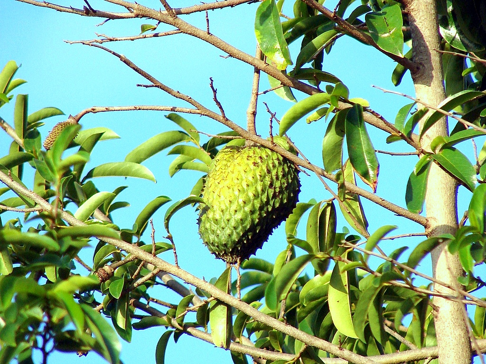
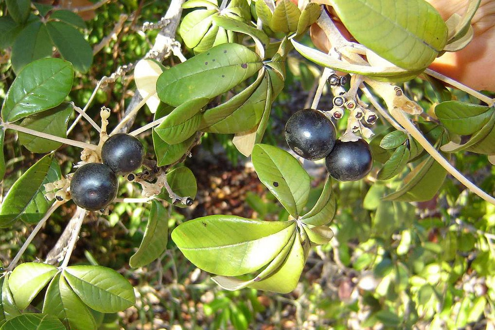
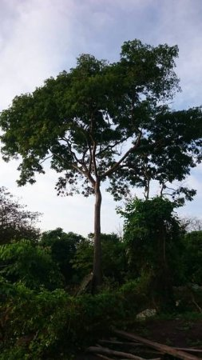
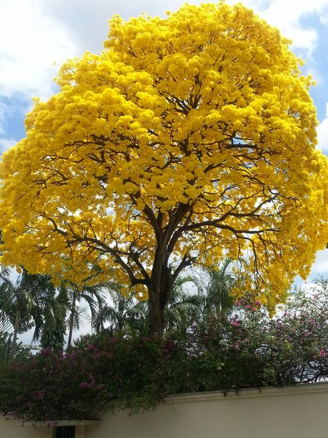
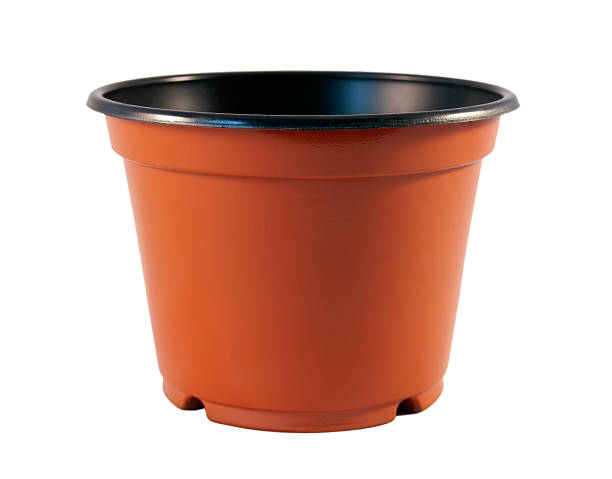
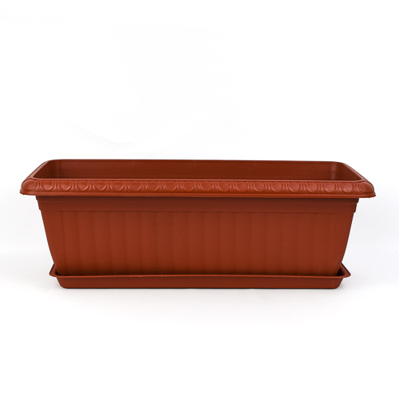
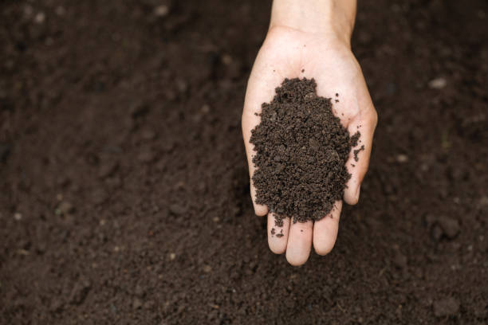
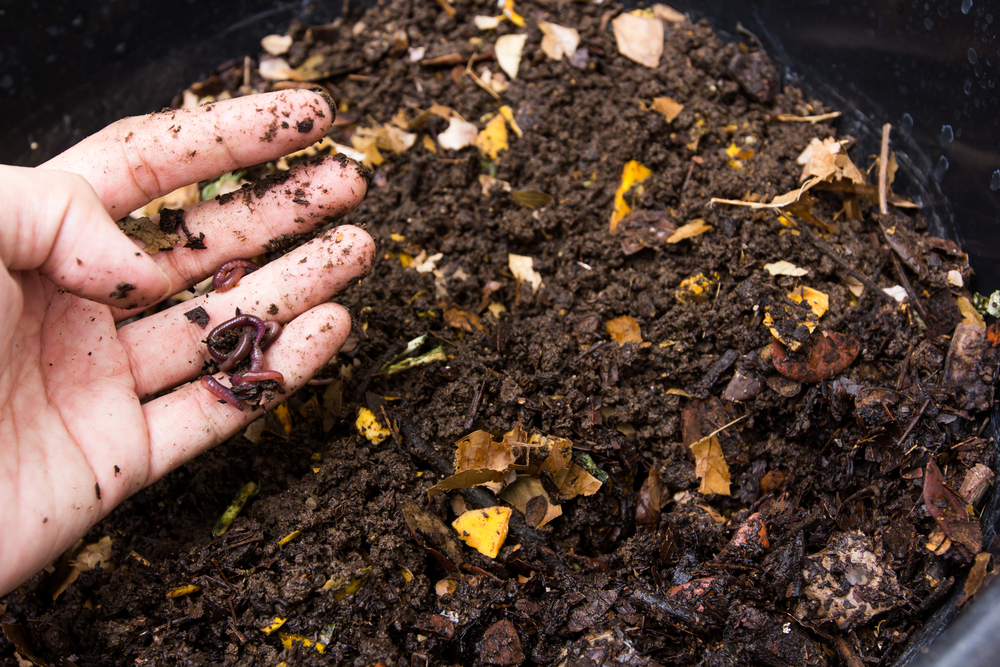
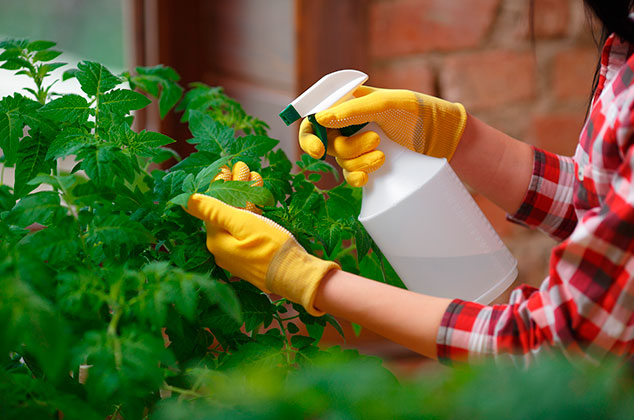
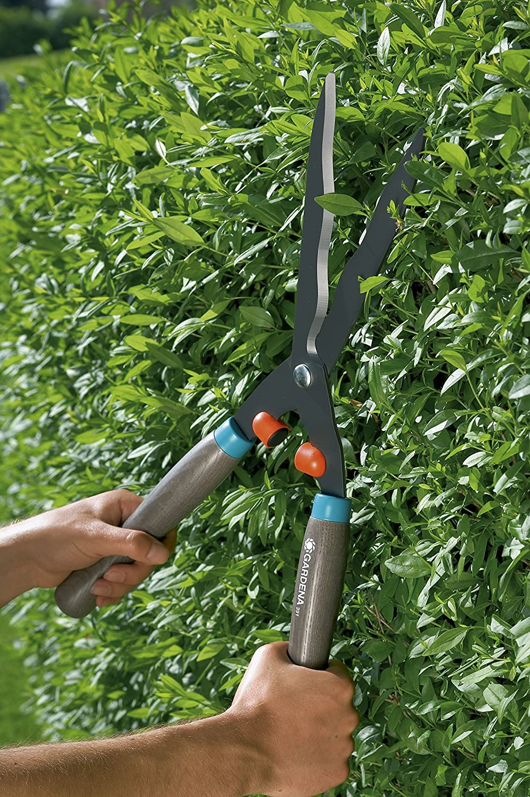

Laurel
Laurel
Laurel (Laurus nobilis) es un arbusto o árbol originario de la zona Mediterránea y sus hojas son utilizadas para remedios y en la cocina. Las hojas de laurel son usadas como condimento en la gastronomía europea, así como en toda América.
Precio: S/8.00
Limonero
Limonero
El arbol limonero de hoja perenne y espinoso de la familia de las rutáceas da como fruto el limón. Este árbol se desarrolla con éxito en los climas templados y tropicales, cultivándose actualmente en todo el mundo.
Precio: S/10.00
Mandarino
Mandarino
Son árboles pequeños que dan como fruto la mandarina. Fruta que se consume principanlmente en fresco, aunque también son conocidos las reservas de gajos de amandarinas.
Precio: S/10.00
Naranjo
Naranjo
El naranjo es un árbol de hoja perenne con una vida útil productiva de 50-60 años. Se cultiva principalmente por sus frutos, las narajas. Su consumo nos brinda muchas propiedades beneficiosas como vitaminas.
Precio: S/11.00

Guanábana
Guanábana
Este árbol frutal da como fruto la guanábana que se consume en fresco o en jugos y batidos. Las hojas se usan para hacer tés. Las semillas son trituradas para hacer lavados externos contra los piojos de la cabeza.
Precio: S/13.00

Samán
Samán
El Samán es un árbol que posee una particular belleza por su majestuosidad, se adapta con facilidad a distintos terrenos y climas Sus frutos o legumbres, son tan particulares que están dentro de una vaina, la pulpa es seca, de color oscuro y su sabor agradable es dulce
Precio: S/15.00

Pechiche
Pechiche
Árbol mediano de 12 mts. de altura promedio y 18 cm de diámetro. El fruto del pechiche tiene una capacidad antioxidante, color negro, similar al dulce de higos, pero de masa compacta, se come con pan o galletas.
Precio: S/14.00

Guachapelí
Guachapelí
El guachapelí es un árbol que puede alcanzar entre 15 y 25 m de altura El sembrar árboles en espacios verdes del Inocar favorecerá tener un ambiente agradable, oxigenado, con áreas recreativas para que nuestros funcionarios se conecten con la naturaleza.
Precio: S/14.00

Guayacán
Guayacán
El Guayacán es un árbol de una media de 12 a 15 metros de altura, de tronco fuerte, es considerado una de las maderas más duras y resistentes del continente americano; sus hojas son grandes con cinco folíolos, de flores amarillas.
Precio: S/15.00

Maceta
Maceta
Aquí se pueden plantar plantas de menor tamaño o los arboles cuando son pequeños, son de material resistente y tienen un agujero en la parte inferior para la salida de exceso de agua.
Precio: S/12.00

Maceta Grande
Maceta Grande
Maceta de mayor tamaño para sembrar varias plantas a la vez, permitiendo sembrar plantas que requieran sombra natural con ayuda de otras plantas.
Precio: S/25.00

Tierra Fértil
Tierra Fértil
A diferencia de la tierra normal, este tipo de tierra ayuda a un mejor desarrollo de la planta, permite un mejor ingreso del agua y nutrientes.
Precio: S/15.00

Abono Natural
Abono Natural
El abono natural ayuda a que la tierra sea más fértil, ayudando al desarrollo de la planta, ser efectivos en el incremento de rendimientos y mejora de la calidad de los productos.
Precio: S/8.00

Insecticida Natural
Insecticida Natural
Insecticida hecho de productos naturales que tiene como importancia el control de plagas de insectos en la agricultura.
Precio: S/7.00

Tijeras de Jardinería
Tijeras de Jardinería
Sirve para cortar pequeñas ramas que obstruyan el paso del sol a otras plantas o para darle forma a un arbusto o arbol
Precio: S/25.00